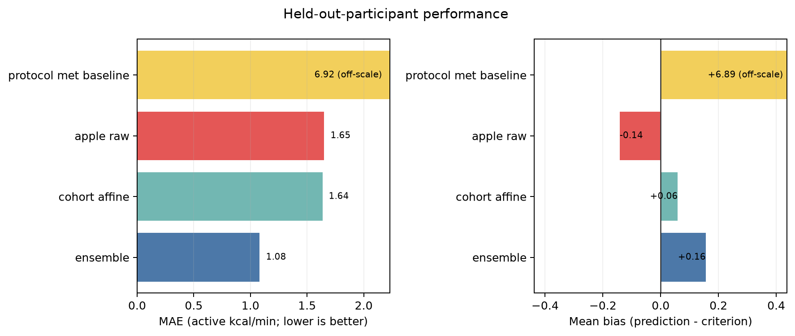
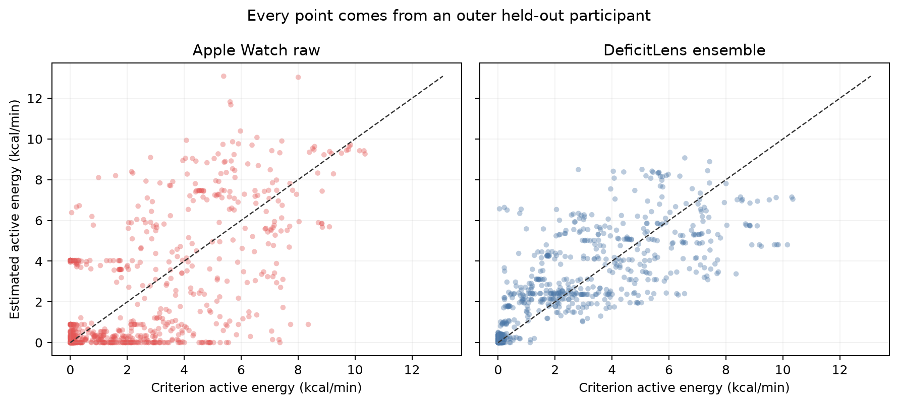
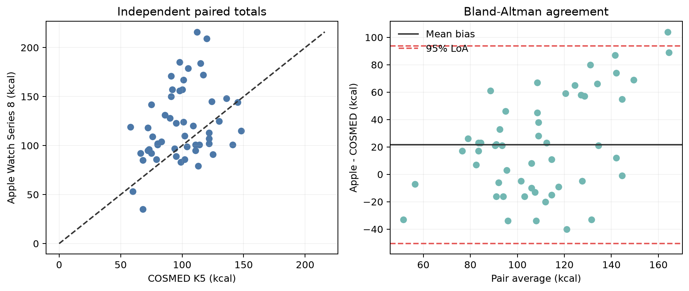

Executive result
The best point estimator by held-out-participant MAE was ensemble. A more complex model is retained only when out-of-fold stacking assigns it weight.
Model comparison

| model | n | mae | rmse | mean_bias | median_absolute_error | mape | mape_n | r2 | ccc | within_0_5_kcal_min | within_1_kcal_min | bland_altman_bias | bland_altman_lower_loa | bland_altman_upper_loa |
|---|---|---|---|---|---|---|---|---|---|---|---|---|---|---|
| apple_raw | 811 | 1.6511 | 2.3412 | -0.1417 | 1.1653 | 78.4924 | 492 | 0.1726 | 0.6516 | 0.3588 | 0.4784 | -0.1417 | -4.7249 | 4.4415 |
| cohort_affine | 811 | 1.6357 | 2.0346 | 0.0593 | 1.1765 | 54.3101 | 492 | 0.3751 | 0.5879 | 0.1221 | 0.3280 | 0.0593 | -3.9293 | 4.0478 |
| protocol_met_baseline | 811 | 6.9216 | 9.6206 | 6.8905 | 6.0021 | 434.8841 | 492 | -12.9711 | 0.2192 | 0.3527 | 0.3859 | 6.8905 | -6.2770 | 20.0579 |
| ensemble | 811 | 1.0818 | 1.6193 | 0.1561 | 0.5679 | 58.9592 | 492 | 0.6042 | 0.7846 | 0.4772 | 0.5943 | 0.1561 | -3.0049 | 3.3171 |
Participant-clustered 95% intervals
| model | metric | estimate | lower | upper | confidence | repetitions | clusters |
|---|---|---|---|---|---|---|---|
| apple_raw | mae | 1.6511 | 1.3659 | 1.9445 | 0.95 | 1000 | 17 |
| apple_raw | mean_bias | -0.1417 | -0.7564 | 0.5400 | 0.95 | 1000 | 17 |
| cohort_affine | mae | 1.6357 | 1.4095 | 1.8606 | 0.95 | 1000 | 17 |
| cohort_affine | mean_bias | 0.0593 | -0.4026 | 0.5652 | 0.95 | 1000 | 17 |
| protocol_met_baseline | mae | 6.9216 | 5.8725 | 8.2703 | 0.95 | 1000 | 17 |
| protocol_met_baseline | mean_bias | 6.8905 | 5.8848 | 7.9681 | 0.95 | 1000 | 17 |
| ensemble | mae | 1.0818 | 0.8748 | 1.3052 | 0.95 | 1000 | 17 |
| ensemble | mean_bias | 0.1561 | -0.3385 | 0.6822 | 0.95 | 1000 | 17 |
Held-out predictions and calibrated uncertainty


The outer test participant is absent from model fitting, stacking-weight learning, and conformal calibration. Calibration participants are also absent from base-model fitting. The primary interval calibrates participant-level maximum residuals; the more compact window-level interval covered 84.6% and is retained as a diagnostic, not promoted as the primary interval.
Independent Apple Watch Series 8 audit

Primary paired analysis: MAE 33.63 kcal, mean bias 21.60 kcal, MAPE 35.7%. The all-paired sensitivity analysis, which restores the paper-wide excluded participant, has MAE 36.34 kcal.
| subgroup_variable | subgroup | participants | mae_kcal | mean_bias_kcal | mape | low_support |
|---|---|---|---|---|---|---|
| sex | Female | 28 | 30.857 | 21.714 | 37.297 | False |
| sex | Male | 24 | 36.875 | 21.458 | 33.932 | False |
| fitzpatrick_skin_type | 3 | 27 | 32.259 | 24.704 | 35.547 | False |
| fitzpatrick_skin_type | 4 | 21 | 34.476 | 14.952 | 33.966 | False |
| fitzpatrick_skin_type | 5 | 4 | 38.500 | 35.500 | 46.404 | True |
| body_fat_band | 20-29.9 | 18 | 23.833 | 7.944 | 26.504 | False |
| body_fat_band | <20 | 8 | 25.750 | 6.000 | 23.730 | False |
| body_fat_band | >=30 | 25 | 43.240 | 38.600 | 45.730 | False |
| body_fat_band | nan | 1 | 33.000 | -33.000 | 48.529 | True |
| bmi_band | 25-29.9 | 14 | 37.714 | 23.714 | 38.989 | False |
| bmi_band | <25 | 16 | 19.375 | 4.875 | 25.436 | False |
| bmi_band | >=30 | 22 | 41.409 | 32.409 | 41.176 | False |
Subgroup audit
Cells with fewer than three participants are marked low-support and must not be read as stable fairness estimates. Activity slices contain repeated windows and are descriptive.
| model | subgroup_variable | subgroup | participants | windows | target_mean | mae | rmse | mean_bias | mape | low_support |
|---|---|---|---|---|---|---|---|---|---|---|
| apple_raw | sex | F | 5 | 224 | 1.8498 | 1.6054 | 2.2928 | 0.6274 | 99.2467 | False |
| apple_raw | sex | M | 12 | 587 | 2.5727 | 1.6685 | 2.3594 | -0.4352 | 70.9611 | False |
| apple_raw | body_fat_band | 20-29.9 | 8 | 343 | 2.4553 | 1.3299 | 2.0294 | -0.3239 | 67.2578 | False |
| apple_raw | body_fat_band | <20 | 6 | 302 | 2.5006 | 1.9115 | 2.5890 | -0.5589 | 75.4494 | False |
| apple_raw | body_fat_band | >=30 | 3 | 166 | 1.9712 | 1.8410 | 2.4647 | 0.9937 | 108.9640 | False |
| apple_raw | bmi_band | 25-29.9 | 7 | 342 | 2.8103 | 1.5019 | 2.1767 | -0.9154 | 62.2757 | False |
| apple_raw | bmi_band | <25 | 9 | 415 | 2.2099 | 1.8085 | 2.4722 | 0.3591 | 87.2139 | False |
| apple_raw | bmi_band | >=30 | 1 | 54 | 0.8582 | 1.3862 | 2.3117 | 0.9092 | 158.0071 | True |
| apple_raw | activity | cycle_high | 16 | 153 | 3.7210 | 2.7520 | 3.1653 | -2.2035 | 81.2530 | False |
| apple_raw | activity | cycle_low | 16 | 152 | 1.7812 | 1.6338 | 1.9221 | -0.9648 | 87.0770 | False |
| apple_raw | activity | run_high | 13 | 65 | 5.9394 | 2.5962 | 3.3219 | 1.7388 | 78.0864 | False |
| apple_raw | activity | run_low | 15 | 133 | 5.0369 | 2.3117 | 2.8077 | 0.6646 | 55.6614 | False |
| apple_raw | activity | sit | 16 | 150 | 0.0667 | 0.5896 | 1.3642 | 0.5217 | 372.6816 | False |
| apple_raw | activity | stand | 16 | 158 | 0.1172 | 0.6645 | 1.3917 | 0.5643 | 167.3597 | False |
| ensemble | sex | F | 5 | 224 | 1.8498 | 1.1394 | 1.6793 | 0.6234 | 73.7955 | False |
| ensemble | sex | M | 12 | 587 | 2.5727 | 1.0598 | 1.5958 | -0.0223 | 53.5753 | False |
| ensemble | body_fat_band | 20-29.9 | 8 | 343 | 2.4553 | 0.9146 | 1.4461 | -0.2085 | 53.4413 | False |
| ensemble | body_fat_band | <20 | 6 | 302 | 2.5006 | 1.0032 | 1.4412 | 0.1070 | 50.8539 | False |
| ensemble | body_fat_band | >=30 | 3 | 166 | 1.9712 | 1.5702 | 2.1704 | 0.9988 | 86.7334 | False |
| ensemble | bmi_band | 25-29.9 | 7 | 342 | 2.8103 | 0.9092 | 1.3810 | -0.3360 | 43.4957 | False |
| ensemble | bmi_band | <25 | 9 | 415 | 2.2099 | 1.1464 | 1.6692 | 0.3659 | 65.2715 | False |
| ensemble | bmi_band | >=30 | 1 | 54 | 0.8582 | 1.6782 | 2.4267 | 1.6604 | 160.8330 | True |
| ensemble | activity | cycle_high | 16 | 153 | 3.7210 | 1.6846 | 2.0351 | -0.5739 | 53.2380 | False |
| ensemble | activity | cycle_low | 16 | 152 | 1.7812 | 1.2300 | 1.5232 | 0.8279 | 80.0236 | False |
| ensemble | activity | run_high | 13 | 65 | 5.9394 | 2.5313 | 3.1136 | 0.2145 | 68.6141 | False |
| ensemble | activity | run_low | 15 | 133 | 5.0369 | 1.6005 | 1.9166 | 0.3241 | 38.5513 | False |
| ensemble | activity | sit | 16 | 150 | 0.0667 | 0.1484 | 0.2235 | 0.1037 | 19.6363 | False |
| ensemble | activity | stand | 16 | 158 | 0.1172 | 0.2086 | 0.2979 | 0.1008 | 74.4788 | False |
Supported-cell disparities
| model | subgroup_variable | mae_gap | mae_ratio | best_group | worst_group |
|---|---|---|---|---|---|
| apple_raw | activity | 2.1624 | 4.6678 | sit | cycle_high |
| apple_raw | bmi_band | 0.3066 | 1.2041 | 25-29.9 | <25 |
| apple_raw | body_fat_band | 0.5816 | 1.4373 | 20-29.9 | <20 |
| apple_raw | sex | 0.0631 | 1.0393 | F | M |
| ensemble | activity | 2.3828 | 17.0529 | sit | run_high |
| ensemble | bmi_band | 0.2373 | 1.2610 | 25-29.9 | <25 |
| ensemble | body_fat_band | 0.6556 | 1.7168 | 20-29.9 | >=30 |
| ensemble | sex | 0.0796 | 1.0751 | M | F |
Fat-loss planning impact
This table asks a narrow counterfactual: if the participant-level mean rate error across cycling/running windows repeated for 30, 45, or 60 exercise minutes daily, what fixed 7,700 kcal/kg arithmetic difference would accumulate? Sit/stand windows are excluded. It does not model metabolic adaptation, intake error, water, or behavior.
| model | active_minutes_per_day | horizon_weeks | median_projected_kg_error | median_absolute_projected_kg_error | p10_projected_kg_error | p90_projected_kg_error |
|---|---|---|---|---|---|---|
| apple_raw | 30 | 4 | -0.1057 | 0.1395 | -0.3060 | 0.1395 |
| apple_raw | 30 | 8 | -0.2114 | 0.2790 | -0.6120 | 0.2790 |
| apple_raw | 30 | 12 | -0.3170 | 0.4186 | -0.9180 | 0.4186 |
| apple_raw | 45 | 4 | -0.1585 | 0.2093 | -0.4590 | 0.2093 |
| apple_raw | 45 | 8 | -0.3170 | 0.4186 | -0.9180 | 0.4186 |
| apple_raw | 45 | 12 | -0.4756 | 0.6278 | -1.3770 | 0.6278 |
| apple_raw | 60 | 4 | -0.2114 | 0.2790 | -0.6120 | 0.2790 |
| apple_raw | 60 | 8 | -0.4227 | 0.5581 | -1.2240 | 0.5581 |
| apple_raw | 60 | 12 | -0.6341 | 0.8371 | -1.8360 | 0.8371 |
| cohort_affine | 30 | 4 | -0.0920 | 0.1793 | -0.2821 | 0.1454 |
| cohort_affine | 30 | 8 | -0.1840 | 0.3586 | -0.5642 | 0.2907 |
| cohort_affine | 30 | 12 | -0.2759 | 0.5379 | -0.8463 | 0.4361 |
| cohort_affine | 45 | 4 | -0.1380 | 0.2690 | -0.4231 | 0.2180 |
| cohort_affine | 45 | 8 | -0.2759 | 0.5379 | -0.8463 | 0.4361 |
| cohort_affine | 45 | 12 | -0.4139 | 0.8069 | -1.2694 | 0.6541 |
| cohort_affine | 60 | 4 | -0.1840 | 0.3586 | -0.5642 | 0.2907 |
| cohort_affine | 60 | 8 | -0.3679 | 0.7172 | -1.1283 | 0.5814 |
| cohort_affine | 60 | 12 | -0.5519 | 1.0759 | -1.6925 | 0.8722 |
| ensemble | 30 | 4 | -0.0247 | 0.1300 | -0.1672 | 0.2337 |
| ensemble | 30 | 8 | -0.0495 | 0.2600 | -0.3344 | 0.4673 |
| ensemble | 30 | 12 | -0.0742 | 0.3900 | -0.5017 | 0.7010 |
| ensemble | 45 | 4 | -0.0371 | 0.1950 | -0.2508 | 0.3505 |
| ensemble | 45 | 8 | -0.0742 | 0.3900 | -0.5017 | 0.7010 |
| ensemble | 45 | 12 | -0.1114 | 0.5850 | -0.7525 | 1.0515 |
| ensemble | 60 | 4 | -0.0495 | 0.2600 | -0.3344 | 0.4673 |
| ensemble | 60 | 8 | -0.0990 | 0.5200 | -0.6689 | 0.9346 |
| ensemble | 60 | 12 | -0.1485 | 0.7800 | -1.0033 | 1.4020 |
Data and reproducibility
- WEEE: md5:23e411c566f1c734e74e23fa76bd1ab0, Apple Watch Series 6, VO₂ criterion approximation, six protocol activities.
- External PAEE 2026: sha256:7a9efa3df497f49d2fbace434f0e2a4987b61208933465de03560f255970a717, Apple Watch Series 8 versus COSMED K5.
- Known timestamp anomaly: P14:cycle_low:non_monotonic_start.
- Runtime: 156.1 seconds; DeficitLens 1.0.0; deterministic seed recorded in
run_manifest.json.